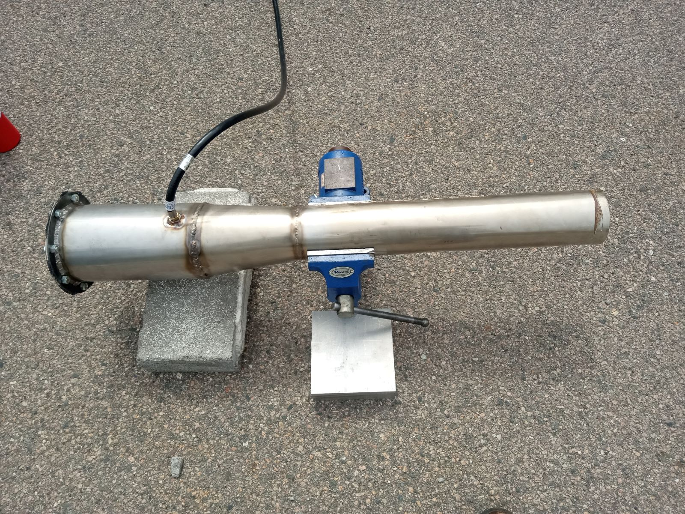
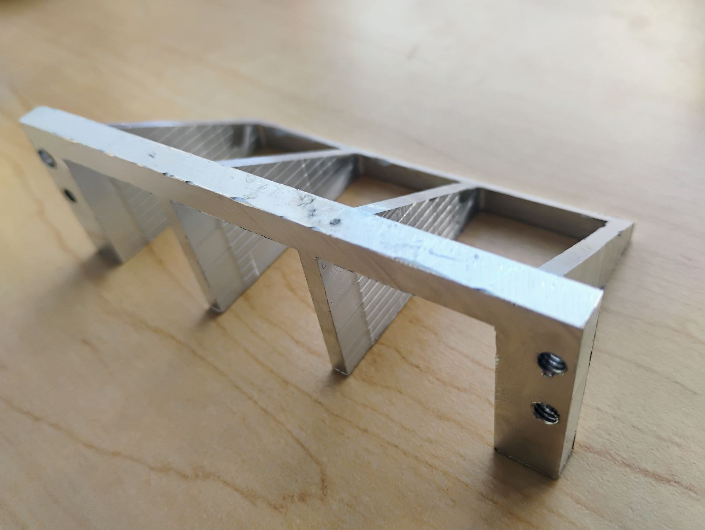

Pulsejet Engine
Sometimes, you just have to do something cool! I worked with two friends to design and build a valved pulsejet engine, fueled by propane. Using the inherent resonance of a metal tube to create repeated deflagrations, a pulsejet is a simple and inefficient but very high-thrust engine.

We used parametric design and fabrication techniques including CNC machining, manual machining, and sheet metal working. My initial low-effort petal-style reed valve failed due to material limitations, inspiring a new v-shaped reed design that should provide better flow and reliable operation. Unfortunately, the installation of this reedvalve turned out to be difficult to implement. I am currently working on building a smaller, more practical pulsejet based on the Brauner design. Although less of my own engineering knowledge is being incorporated here, I am improving my fabrication skills by welding and machining the components.

